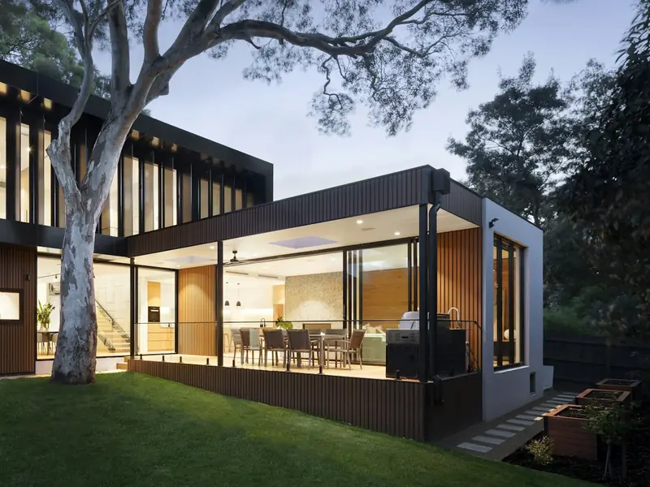

Backyard Design
How to Plan a Complete Backyard Remodel
You can build a yard in stages. You cannot decide it in stages — and confusing those two is what makes a remodel cost more than it should.
The distinction this whole guide rests on
There are two ways a yard gets remodelled. In the first, somebody decides what the whole space is going to be, and then builds it — all at once if the budget allows, over several years if it does not. In the second, somebody builds the thing they want most, and then a year later builds the next thing around it, and then a third thing around both.
The second is not obviously wrong while it is happening. Every individual decision is reasonable. The problem shows up in the joins: a terrace laid at a level that a later structure has to work around, paving opened to run a gas line that was not planned, a drainage fall that made sense for one area and does not for three, and a yard that reads as a series of purchases rather than a place.
What follows is how to avoid that without needing to spend everything in one season.
Step one
Write the brief before the wish list
A wish list is a set of objects: a kitchen, a pergola, a fire feature, turf. A brief is a set of statements about how the space needs to work. The second one produces better yards, and it is much cheaper to change.
Useful brief statements sound like this: we want to eat outside four nights a week and the walk from the kitchen is the problem; the yard is unusable between one and five in the afternoon; the dog has destroyed the same strip three times; we can see straight into next door's window from the pool.
Each of those points at a solution without naming one, which leaves room for the answer to be cheaper or simpler than the object you had in mind. "Unusable in the afternoon" might mean a structure — or it might mean moving the seating twelve feet to where an existing tree already shades it at the right hour.
It also gives you a way to judge the finished job. A yard either did or did not fix the four things you wrote down. That is a far better test than whether it matches a photograph you saved.
Step two
Find out what you are working with
Six things about the property that constrain everything downstream. Most of them are invisible until someone looks.
Where water goes now
Walk the yard after a heavy storm and note where it stands. That spot is a groundwork item, not a landscaping one, and it will not be fixed by whatever gets laid over it.
How the ground actually falls
Most South Florida yards are close to flat, which means falls have to be designed rather than borrowed from a natural slope. Finished levels are the skeleton of the whole plan.
What access exists
The narrowest point on the route to the rear decides what machinery can reach it, and therefore method, sequence and sometimes what is realistic to build.
What is already in the ground
Irrigation, drainage runs, utilities, septic and well infrastructure, and old foundations. Worth locating before a design assumes clear ground.
The trees, and their roots
A root plate spreads further than the canopy suggests. Roots decide where paving can sensibly go, and tree work is a separate specialty that is regulated in many places.
Boundaries and easements
Where the line actually is — a survey question, not a fence question — and whether anything crosses the property that limits what can be built over it.
Step three
Decide now, or decide later?
The single most useful table in this guide. The left column is not deferrable at any price; the right column can wait years.
| Decision | When | Why |
|---|---|---|
| Zones and circulation | Now | Everything else is positioned relative to them, including things built years later. |
| Finished levels and falls | Now | Changing them later means lifting whatever was laid on top. |
| Drainage runs | Now | Retrofitting drainage into a finished surface means taking the surface up. |
| Buried services and sleeves | Now | Trivial to install into an open trench; disproportionately expensive once a finished surface sits over the route. |
| Position of anything with footings | Now | The location must be fixed even if the structure is a later phase, because the footing goes in before the paving. |
| Which surfaces are hard and which stay green | Now | It sets the extent of the base build and the edges the green is anchored to. |
| Paving material, format and finish | Can wait, within the extent already set | The base is built to a depth; the surface on it is a later selection. |
| Which structure, and what it is made of | Can wait, if the position and footing are set | Type and material can be chosen closer to the build. |
| Appliances, planting, lighting fittings, furniture | Can wait | Provided the services they need are in the ground, these are genuinely deferrable. |
Step four
The build sequence, and why it does not bend
-
Clear and expose
Out with what is being removed, and a look at what it was sitting on. On a remodel this is where the real condition of the ground is established rather than assumed.
-
Levels, falls and drainage
The skeleton. Everything visible is positioned against these, and they are the most expensive thing on the list to revisit.
-
Everything buried
Drainage runs, conduit, gas, water, irrigation alterations and sleeves for later phases — all while the ground is open and nothing is in the way.
-
Footings
For structures and for anything built-in, cast before the surfaces around them so nothing has to be cut open later.
-
Base and surfaces
Aggregate placed and compacted, then paving laid, restrained and jointed, with the setting-out worked from the most visible edge.
-
Green and boundary
Turf, planting and fencing — late, because the boundary is usually the route material has been coming through, and green is easily damaged by traffic.
-
Finishing and handover
Lighting fittings, hardware, clean-down, and a walkthrough that goes round the junctions and edges rather than admiring the middle.
That order is not a preference. Each step physically depends on the one before it, which is why a project assembled from separate trades at separate times tends to violate it — not through incompetence, but because nobody was holding the whole programme. The complete outdoor remodeling page covers how that coordination works in practice.
Step five
Phasing without paying twice
Phasing works. It works when phase one includes everything from the "now" column of the table above, whether or not the thing it serves is being built.
The rule of thumb: if it goes under a finished surface, it belongs in the first phase. A capped gas stub, a conduit for lighting, a sleeve under a terrace, a footing pad where a structure will eventually stand — all of these are inexpensive while a machine is already on site and the ground is already open.
The second rule: phase by area, not by trade. Finishing one zone completely is more satisfying to live with, and less wasteful, than doing all the groundwork everywhere and then waiting two years for any of it to look finished.
What phasing genuinely costs you is the setup, paid again each time: access opened, protection installed, equipment brought in, deliveries staged. On a constrained site — a narrow lot, no rear access — that cost is high enough to change the maths, which is why the calculation is different in coastal Fort Lauderdale than on a large open lot in Parkland.

Step six
Approvals, and the trades that are not one contractor's
On approvals: requirements vary by jurisdiction and by scope. A whole-yard project may involve several separate approvals or very few, depending on what is in it and where the property sits, and neighbouring municipalities are not interchangeable. What you want from a contractor is not a confident general answer but a commitment to confirm what applies at your address with the authority that reviews it — and to tell you what that means for the programme. Where a community association is also involved, that approval runs on its own timetable and is frequently the slower of the two.
On trades: no contractor in Florida self-performs every element of an outdoor project, and one who claims to is describing a business that does not exist. Pool shells, screen enclosures, tree removal, marine work at a seawall and some electrical and gas work are separate specialties with their own licensing. That is not a problem — it is how construction works. What matters is that the written proposal says which elements are performed and which are coordinated, so you know who is accountable for what before anything starts.
On the pool, specifically: when pool work and deck work overlap, one datum has to win, and it is the water's. Everything around it is set out from the coping the pool contractor establishes. Agreeing that in the first week prevents the most expensive argument available on this kind of project.
Step seven
Judging the people, not the photographs
Ask what is under the surface
How deep, in what, compacted how, held in by what. On a project this size, an answer that stays general is the clearest signal available that the groundwork has not been priced.
Ask where the water goes
A redesigned yard changes where rain goes. Whoever drew it should be able to point at the destination on the plan, and it should be on your property.
Ask what is excluded
A scope written only as inclusions is half a scope. What is not in the price is the half that produces arguments.
Ask what happens if the ground surprises us
Old ground hides things. The mechanism for pricing what gets uncovered belongs in the contract, not in a conversation held while a machine sits idle.
Check the licence yourself
Any contractor's licence number should be published and verifiable independently. Ours is CBC1269393 and it is in the footer of every page here.
Be wary of confident numbers
Lifespans, cost-recouped percentages, wind ratings quoted before a design exists, and "studies show" without a study. All are marketing rather than information.
Common questions
Planning questions we get asked
Do I need a designer, or can a contractor plan it?
Either can work, and the thing to watch is not the job title but whether the practical constraints get raised before the layout is fixed. Falls, drainage, thresholds, footings and access are where a drawing and a site most often disagree, and they are cheaper to resolve on paper. If you engage a designer, the earlier a builder sees the drawings the better. If you go straight to a contractor, ask to see the thinking written down rather than described — a scope you can read is a scope you can hold someone to.
Is it cheaper to do everything at once?
Usually, per unit of work, because the setup is paid once instead of repeatedly: access opened once, protection installed once, equipment mobilised once, ground opened once for everything that has to be buried. That is not the same as saying you should. Phasing is a legitimate way to manage cost, and it works well as long as the whole yard is planned first and anything that has to go underground goes in during the first phase. The expensive version is phasing without a plan.
What should I do first if the budget will not cover everything?
Deal with whatever is broken, then the ground, then the floor. Water that pools and slabs that move will defeat anything laid on top of them, which is why they get funded ahead of the parts you would rather be buying. After that, the paved area does more for how a yard looks and works than anything else, and cover over part of it does more for how much you use it. Planting, lighting and furniture are last because they are the cheapest to revisit.
How disruptive is a whole-yard project?
Materially, and the honest way to handle it is to agree the practicalities before the first day rather than during. Which route material takes to the rear, where equipment stands, which days the yard is unusable, how the site is left secure overnight, where pets go while gates are open, and what happens to any pool enclosure while work is in progress. None of it is complicated. All of it goes badly when it is improvised.
What about permits and community approvals?
Requirements vary by jurisdiction and by the scope of the work, so a whole-yard project may involve several separate approvals or few, depending on what is in it and where the property is. Treat any general claim about what your project will need with caution until someone has looked at your address and your scope. An association, where one governs the property, reviews on its own criteria and its own calendar — usually the longer of the two tracks, which is an argument for opening it first.
Get the whole yard planned, build it when you like
A free on-site visit, a plan that covers everything in the "decide now" column, and an honest view on which phase is worth funding first.